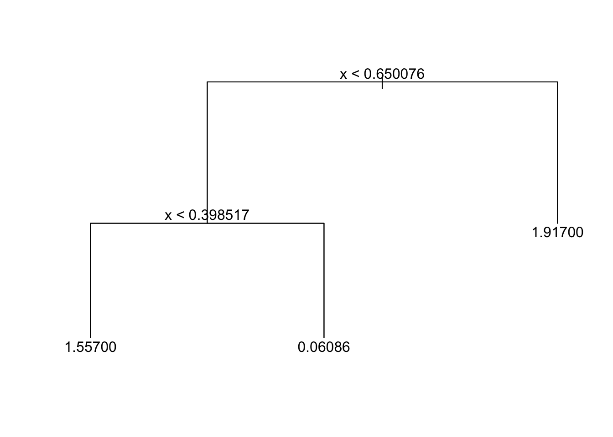
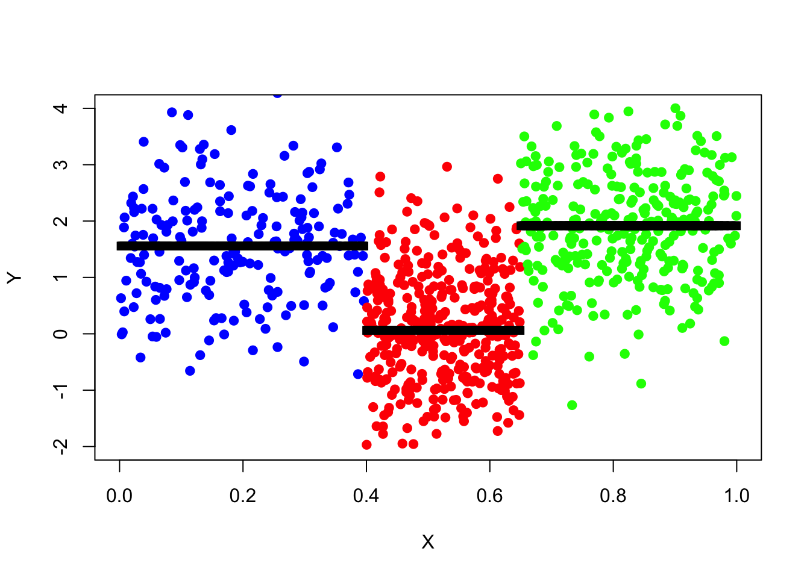
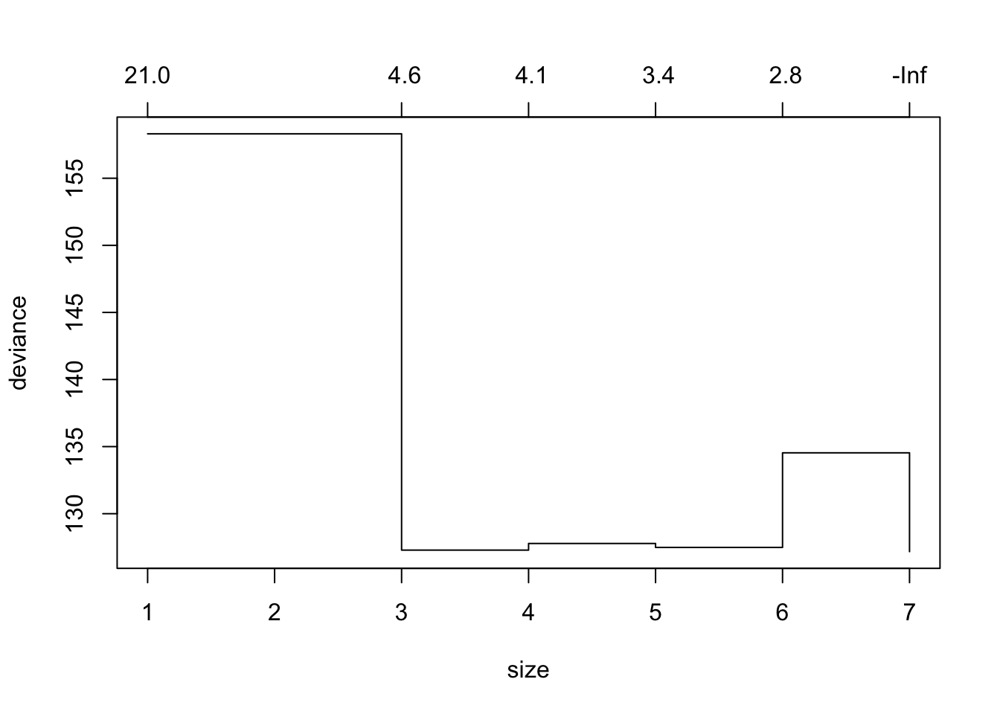
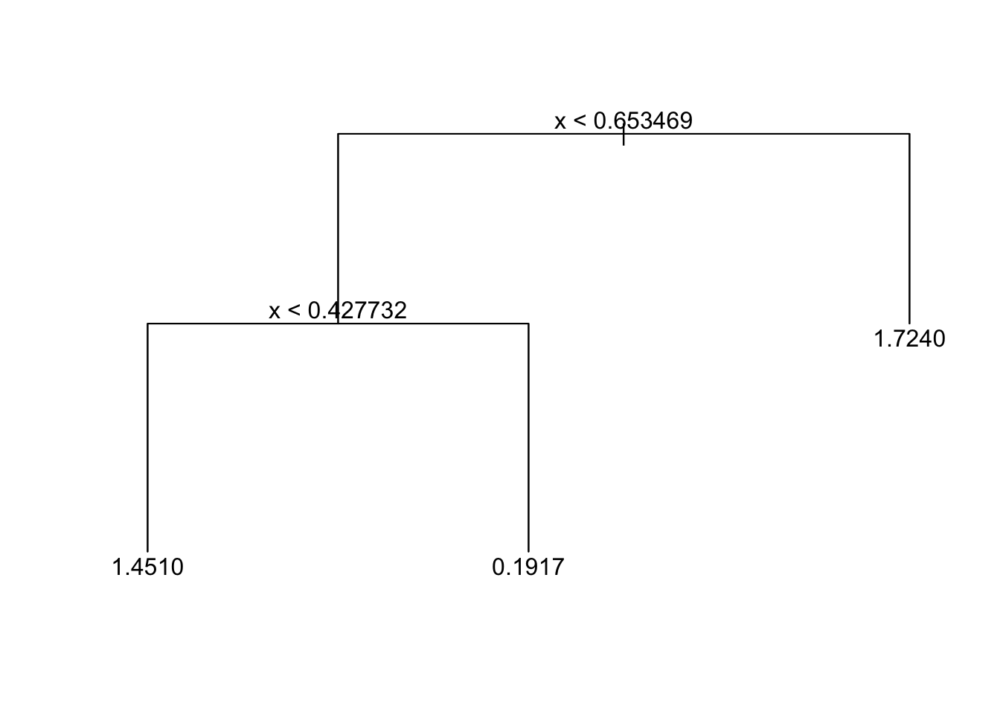
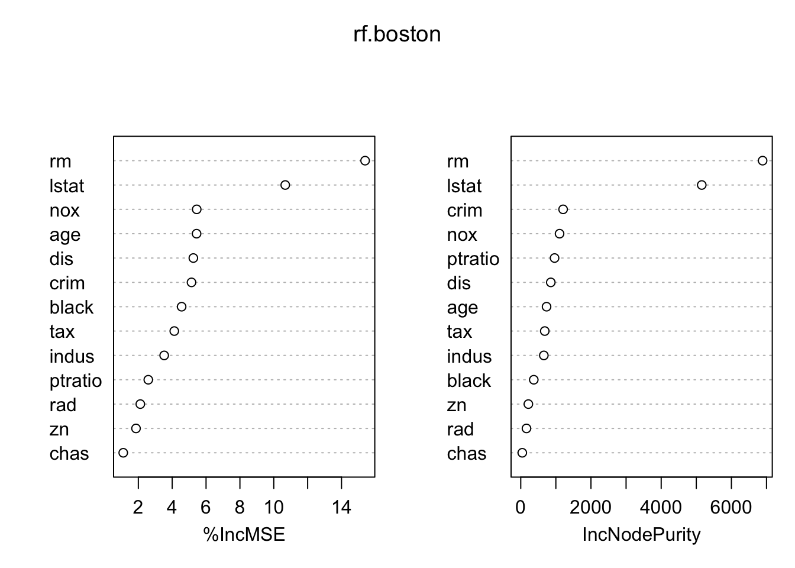
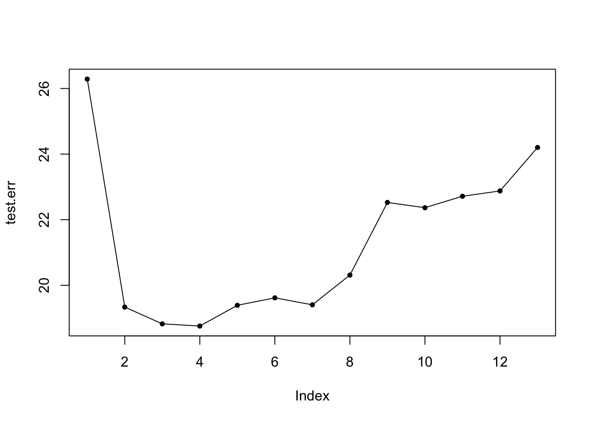

Chapter 10 Tree Models
10.1 Building Tree Models
library("tree")Use tree() function from library("tree").
tree_fit = tree(y ~ x, data_surrogate)
#summary(tree_fit)
#tree_fitPlotting Trees
If pretty = 0 then the level names of a factor split attributes are used unchanged.
plot(tree_fit)
text(tree_fit, pretty=0)
Predictions
Example from practical demonstration with synthetic surrogate data.
set.seed(347)
data_surrogate_test <- data.frame(x = c(runif(200, 0, 0.4), runif(400, 0.4, 0.65), runif(300, 0.65, 1)),
y = c(rnorm(200, 1.5), rnorm(400, 0), rnorm(300, 2)))Use predict() function. The tree model gives the mean in that terminal node group as a prediction.
tree_pred = predict(tree_fit, data_surrogate_test)Plotting Predictions
plot(x = data_surrogate_test$x[1:200], y = data_surrogate_test$y[1:200],
col = 'blue', xlab = "X", ylab = "Y", pch = 19, xlim = c(0,1), ylim = c(-2,4))
points(x = data_surrogate_test$x[201:600], y = data_surrogate_test$y[201:600], col = 'red', pch = 19)
points(x = data_surrogate_test$x[601:900], y = data_surrogate_test$y[601:900], col = 'green', pch = 19)
points(x=data_surrogate_test$x,y=tree_pred,col='black',pch=15)
MSE
pred_mse=mean((data_surrogate_test$y-tree_pred)^2)
pred_mse## [1] 1.005645Pruning Trees
Prune tree with prune.tree() command, but can first plot the deviance for different size trees using cv.tree() with parameter FUN = prune.tree.
tree_cv_prune = cv.tree(tree_fit_s, FUN = prune.tree)
#tree_cv_prune
plot(tree_cv_prune)
Fitting Pruned Model
tree_fit_prune = prune.tree(tree_fit_s, best = 3)
tree_fit_prune## node), split, n, deviance, yval
## * denotes terminal node
##
## 1) root 90 131.60 1.0660
## 2) x < 0.653469 60 90.67 0.7376
## 4) x < 0.427732 26 29.65 1.4510 *
## 5) x > 0.427732 34 37.64 0.1917 *
## 3) x > 0.653469 30 21.48 1.7240 *You may also prune the tree by specifying the cost-complexity parameter k, for example tree_fit_prune=prune.tree(tree_fit_s, k=5).
Pruned Tree:
plot(tree_fit_prune)
text(tree_fit_prune,pretty=0)
Pruning has decreased the MSE:
tree_pred_prune=predict(tree_fit_prune,data_surrogate_test)
pred_mse_prune = mean((data_surrogate_test$y-tree_pred_prune)^2)
pred_mse - pred_mse_prune## [1] 0.1765653The following function shows this is a general result and holds on average:
prune_improvement <- function(k) {
data_surrogate_s <- data.frame(x = c(runif(20, 0, 0.4), runif(40, 0.4, 0.65), runif(30, 0.65, 1)),
y = c(rnorm(20, 1.5), rnorm(40, 0), rnorm(30, 2)))
tree_fit_s = tree(y~x,data_surrogate_s)
tree_pred_s = predict(tree_fit_s,data_surrogate_test)
pred_mse_s = mean((data_surrogate_test$y-tree_pred_s)^2)
tree_fit_prune = prune.tree(tree_fit_s,k=5)
tree_pred_prune = predict(tree_fit_prune,data_surrogate_test)
pred_mse_prune = mean((data_surrogate_test$y-tree_pred_prune)^2)
dif_t = pred_mse_s-pred_mse_prune
return(dif_t)
}
mean(sapply(1:1024, FUN=function(i){prune_improvement(5)}))## [1] 0.0992611710.2 Bagging and Random Forests
Follows an example which uses library(ISLR) and library(MASS) for bagging, random forests and boosted trees. We have data_train and data_test from the Boston dataset.
Tree Model and Pruned Tree Model Trained:
tree.boston = tree(medv ~ ., data_train)
prune.boston = prune.tree(tree.boston, best = 6)Bagging Model
For bagging, we use the library(randomForest) package but with mrty = 13 (\(m = p\) so using all predictors).
Bagging Model (10 Trees):
set.seed (472)
bag.boston = randomForest(medv ~ ., data = data_train, mtry=13, ntree=10, importance = TRUE)Prediction Accuracy:
pred.bag = predict(bag.boston, newdata = data_test)
plot(pred.bag, data_test$medv, bty = 'l')
abline(0,1)
MSE:
mean((pred.bag - data_test$medv)^2)## [1] 23.98799Same for 100 and 1000 trees:
#100 trees
bag.boston = randomForest(medv ~ ., data = data_train, mtry = 13, ntree = 100, importance = TRUE)
pred.bag = predict(bag.boston, newdata = data_test)
mean((pred.bag - data_test$medv)^2) #MSE## [1] 24.04128#1000 trees
bag.boston = randomForest(medv ~ ., data = data_train, mtry = 13, ntree = 1000, importance = TRUE)
pred.bag = predict(bag.boston, newdata = data_test)
mean((pred.bag - data_test$medv)^2) #MSE## [1] 23.46335Random Forests
Use mtry as something else for random forests. By default this will be \(p/3\) but can also try \(\sqrt{p}\). Very similar method to bagging.
rf.boston = randomForest(medv ~ ., data = data_train, mtry = 4, ntree = 100, importance = TRUE) #uses 4 variables
pred.rf = predict(rf.boston, newdata = data_test)
mean((pred.rf -data_test$medv)^2) #MSE## [1] 19.23722Importance Plot
importance(rf.boston)## %IncMSE IncNodePurity
## crim 5.141187 1206.45846
## zn 1.862903 216.91995
## indus 3.527213 657.55620
## chas 1.109467 43.61585
## nox 5.448503 1105.66023
## rm 15.393403 6888.75872
## age 5.439751 735.33618
## dis 5.249046 855.71969
## rad 2.117459 163.24660
## tax 4.123422 684.25752
## ptratio 2.589235 963.42017
## black 4.557716 370.96316
## lstat 10.676720 5155.26867?importance
varImpPlot(rf.boston)
Plotting test error (MSE) for all different mtry()
test.err = double(13) #sequence of all zeros length 13
for(mtry_t in 1:13){
fit = randomForest(medv ~ ., data = data_train, mtry = mtry_t, ntree = 100)
pred = predict(fit, data_test)
test.err[mtry_t] = mean((pred - data_test$medv)^2)
}
plot(test.err, pch = 20)
lines(test.err)
10.3 Boosting
Use the Generalized Boosted Regression Modelling (GBM) Package library(gbm).
library(gbm)For boosted regression trees, use distribution = "gaussian" but for binary classification problems, use distribution = “bernoulli”.
set.seed(517)
boost.boston = gbm(medv ~ ., data = data_train, distribution="gaussian", n.trees = 1000, interaction.depth = 2)
#interaction depth is d in lecture notes
summary(boost.boston) #makes a plot too
## var rel.inf
## rm rm 42.6691313
## lstat lstat 31.2820748
## crim crim 5.0703499
## dis dis 4.5616872
## nox nox 3.2604137
## age age 3.1196043
## black black 2.9887370
## ptratio ptratio 2.6983302
## tax tax 1.9729225
## indus indus 1.1820825
## rad rad 0.8957232
## chas chas 0.1816023
## zn zn 0.1173412pred.boost = predict(boost.boston, newdata = data_test, n.trees = 1000)
mean((pred.boost-data_test$medv)^2) #MSE - improvement on random forests## [1] 16.98637